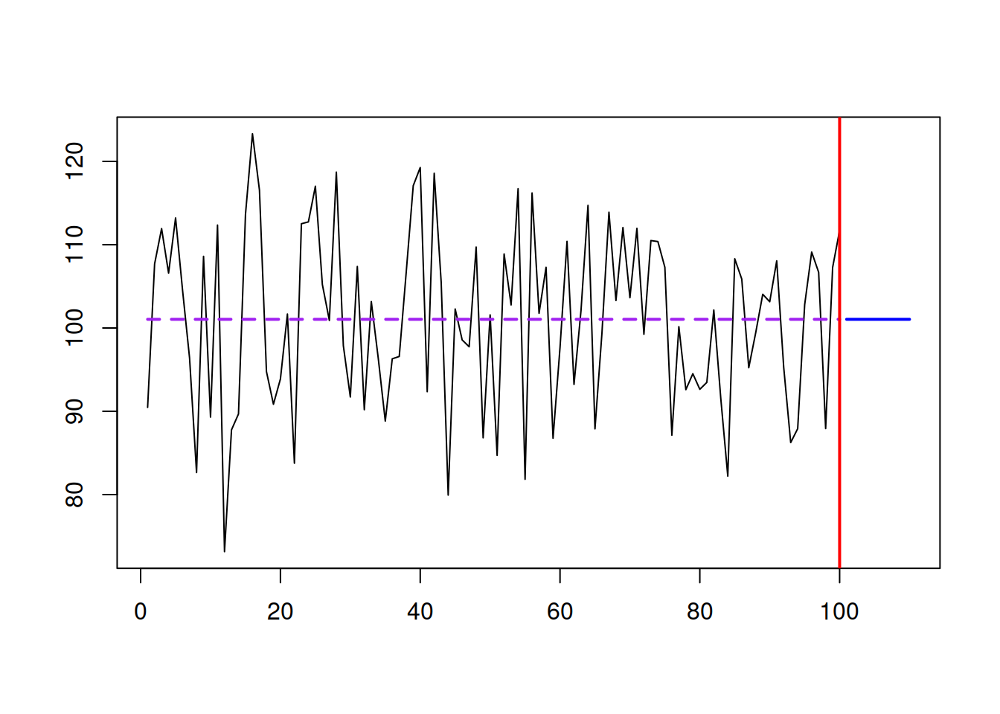
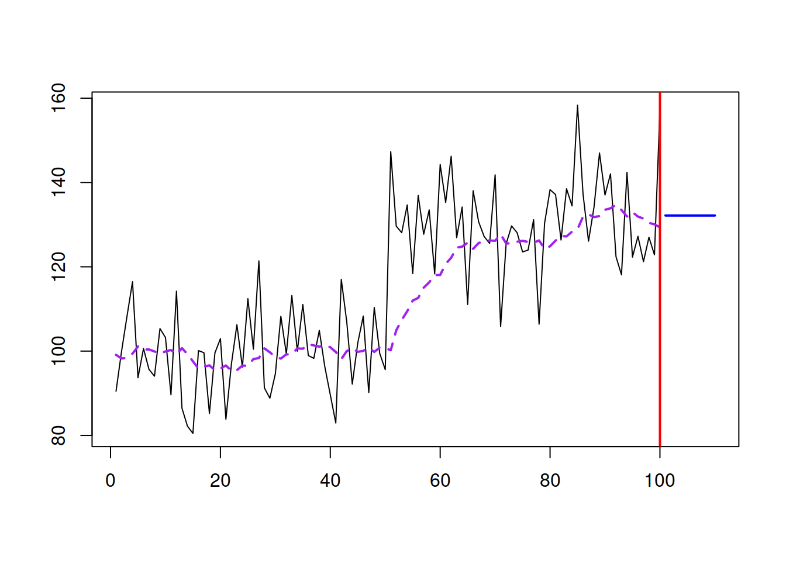
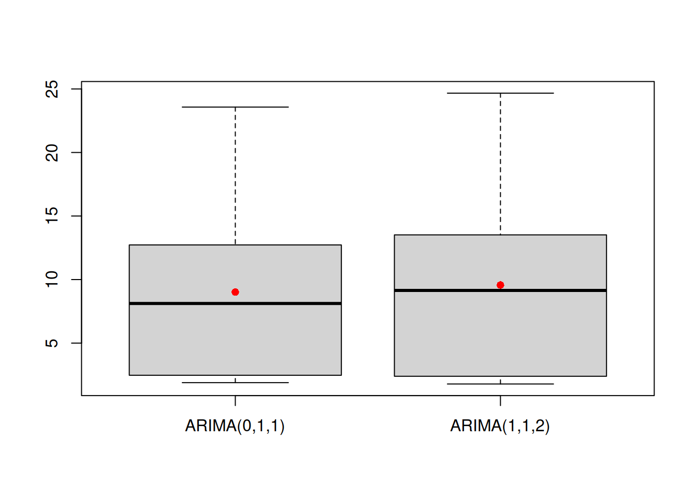
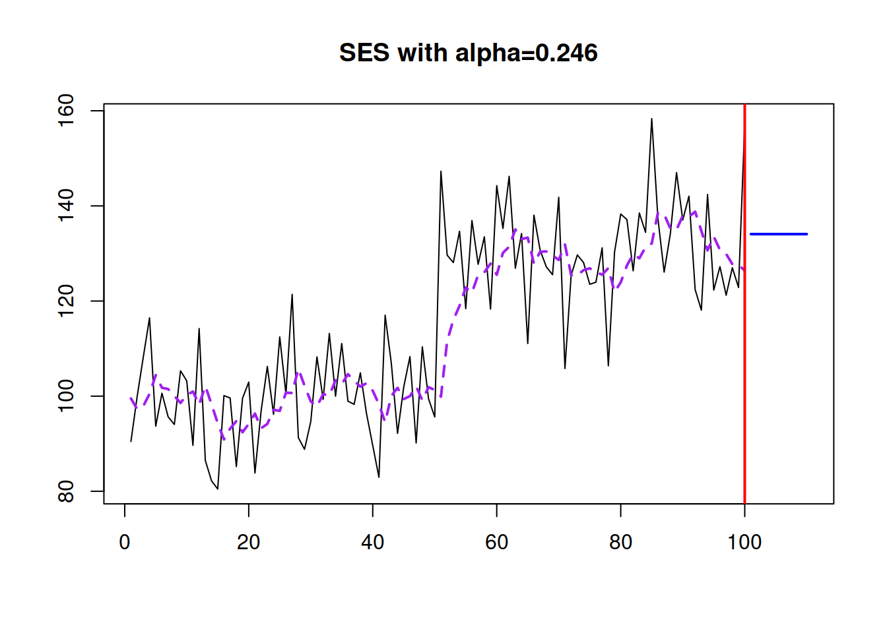

5.1 Simple Exponential Smoothing
We start our discussion of exponential smoothing with the original Simple Exponential Smoothing (SES) forecasting method, which was formulated by (Brown 1956): \[\begin{equation} \hat{y}_{t+1} = \hat{\alpha} {y}_{t} + (1 - \hat{\alpha}) \hat{y}_{t}, \tag{5.1} \end{equation}\] where \(\hat{\alpha}\) is the smoothing parameter, defined by analyst and which is typically restricted with (0, 1) region (this region is actually arbitrary and we will see later what is the correct one). This is one of the simplest forecasting methods, and the smoothing parameter in it is typically interpretted as a weight between the actual value and the one-step-ahead predicted one. If the smoothing parameter is close to zero, then more weight is given to the previous fitted value \(\hat{y}_{t}\) and the new information is neglected. When it is close to one, then mainly the actual value \({y}_{t}\) is taken into account. By changing the smoothing parameter value, the forecaster can decide how to approximate the data and filter out the noise.
Also, notice that this is a recursive method, meaning that there needs to be some starting point \(\hat{y}_1\) in order to apply (5.1) to the existing data. Different initialisation and estimation methods for SES have been discussed in the literature, but the sttate of the art one is to estimate \(\hat{\alpha}\) and \(\hat{y}_{1}\) together by minimising some loss function. Typically MSE is used as one, minimising the one step ahead forecast error.
Here is an example of how this method works on different time series. We start with generating a stationary series and using es() function from smooth package. Although it implements the ETS model, we will see later the connection between SES and ETS(A,N,N). We start with the stationary time series and \(\hat{\alpha}=0\):
y <- rnorm(100,100,10)
ourModel <- es(y, model="ANN", h=10, persistence=0)
plot(ourModel, 7, main=paste0("SES with alpha=",ourModel$persistence))
The SES works well in this case, capturing the deterministic level of the series and filtering out the noise. In this case, it works like a global average applied to the data. As mentioned before, the method is flexible, so if we have a level shift in the data and increase the smoothing parameter, it will adapt and get to the new level. Here is an example:
y <- c(rnorm(50,100,10),rnorm(50,130,10))
ourModel <- es(y, model="ANN", h=10, persistence=0.1)
plot(ourModel, 7, main=paste0("SES with alpha=",ourModel$persistence))
With \(\hat{\alpha}=0.1\), it manages to get to the new level, but now the method starts adapting to noise a little bit - it follows the peaks and troughs and repeats them, but with much smaller magnitude. If we increase the smoothing parameter, it will react to the changes much faster, but it will also react more to noise: 
If we set \(\hat{\alpha}=1\), we will end up with Naive forecasting method, which is not appropriate for our example:
So, when working with SES, we need to make sure that the reasonable smoothing parameter is selected. This can be done automatically via minimising the MSE:
ourModel <- es(y, model="ANN", h=10, loss="MSE")
plot(ourModel, 7, main=paste0("SES with alpha=",round(ourModel$persistence,3)))
This approach won’t guarantee that we will get the most appropriate \(\hat{\alpha}\), but it has been shown in the literature that the optimisation of smoothing parameter on average leads to improvements in terms of forecasting.
An alternative form of SES is known as error correction form and involves some simple permutations, taking that \(e_t=y_t-\hat{y}_t\) is the one step ahead forecast error: \[\begin{equation} \hat{y}_{t+1} = \hat{y}_{t} + \hat{\alpha} e_{t}. \tag{5.2} \end{equation}\] In this form, the smoothing parameter \(\hat{\alpha}\) regulates how much the model reacts to the forecast error. In this interpretation it no longer needs to be restricted with (0, 1) region, but we would still typically want it to be closer to zero, in order to filter out the noise, not to adapt to it.
As you see, this is a very simple method. It is easy to explain it to practitioners and it is very easy to implement in practice. However, this is just a forecasting method, so it just gives a way of generating point forecasts, but does not explain where the error comes from and how to generate prediction intervals.
References
Brown, Robert G. 1956. “Exponential Smoothing for predicting demand.” Cambridge 42, Massachusetts: Arthur D. Little, Inc.